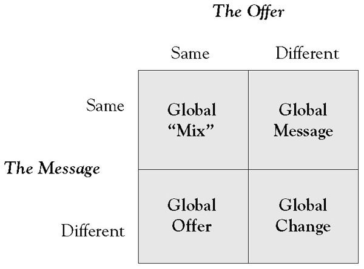

A useful construct for analyzing the need to adapt the offer and message (positioning) dimensions is the value proposition globalization matrixA construct for analyzing the need to adapt the offer and message (positioning) dimensions. shown in Figure 6.1 "The Value Proposition Globalization Matrix", which illustrates four generic global strategies:
Figure 6.1 The Value Proposition Globalization Matrix
Global mix or pure aggregation strategiesValue proposition strategies that can be used in global markets. are relatively rare because only a few industries are truly global in all respects. They apply (a) when a product’s usage patterns and brand potential are homogeneous on a global scale, (b) when scale and scope cost advantages substantially outweigh the benefits of partial or full adaptation, and (c) when competitive circumstances are such that a long-term, sustainable advantage can be secured using a standardized approach. The best examples are found in industrial product categories such as basic electronic components or certain commodity markets.
Global offer strategiesStrategies that allow the same value proposition offer to be advantageously positioned differently in different parts of the world. are feasible when the same offer can be advantageously positioned differently in different parts of the world. There are several reasons for considering differential positioning. When fixed costs associated with the offer are high, when key core benefits offered are identical, and when there are natural market boundaries, adapting the message for stronger local advantage is tempting. Although such strategies increase local promotional budgets, they give country managers a degree of flexibility in positioning the product or service for maximum local advantage. The primary disadvantage associated with this type of strategy is that it could be difficult to sustain or even dangerous in the long term as customers become increasingly global in their outlook and confused by the different messages in different parts of the world.
Check into a Four Points Hotel by Sheraton in Shanghai and you will get all the perks of a quality international hotel: a free Internet connection, several in-house restaurants, a mah-jongg parlor, and an assortment of moon cakes, a Chinese delicacy. All this for $80 a night, about 20% less than the average cost of a room in Shanghai.
For travelers who associate the Sheraton brand with plastic ice buckets and polyester bedspreads in the United States, this may come as a surprise. Like Buick, Kentucky Fried Chicken (KFC), and Pizza Hut, Sheraton is one of those American names that, to some, seems past its prime at home, but it is still popular and growing abroad. The hotel brand has particular cachet in China, going back to 1985, when it opened the Great Wall Sheraton Hotel Beijing. Local developers still compete to partner with Sheraton’s parent company—Starwood Hotels & Resorts Worldwide—to develop new properties. In the near future, the company will have more rooms in Shanghai than it does in New York.
Like many other U.S. companies experiencing pressure at home, Starwood sees China as one of its best hopes for growth. The company, which also owns the upscale St. Regis, Westin, W, and Le Meridien brands, expects much of this growth will come from outlying regions. Big cities such as Beijing now have plenty of rooms, thanks in part to the Olympics, but there is growing demand for business-class accommodation in second- and third-tier cities such as Jiangyin and Dalian. Lower construction costs and inexpensive labor mean the company’s Chinese hotel owners can offer guests a lot more than comparably priced U.S. properties.
In recent years, the focus in China has shifted from international travelers to Chinese consumers. Starwood now asks its hotel staff to greet guests in Mandarin instead of English, which was long used to convey a sense of prestige. Many of its hotels do not label their fourth floors as such because four is considered an unlucky number.
Starwood is not alone in recognizing the potential of the Chinese market. Marriott International hopes to increase its China presence by 50%, to 61 hotels by 2014. And InterContinental Hotels Group, parent of Holiday Inn, plans to double the 118 hotels it has in China over the next 3 years.
One major perk Starwood can offer over local competitors is its extensive global network and loyalty perks. More than 40% of its Chinese business comes through its preferred-guest program, and Chinese membership in the program is increasing rapidly. But local customers are not particularly focused on accruing points to earn a free stay. They are more interested in “status,” using points to get room upgrades, a free breakfast, or anything that accords them conspicuous VIP treatment. Among other things, the preferred guest system allows staffers to see people’s titles immediately. That makes it easier to give better rooms to managers than the subordinates they are traveling with and to greet them first when a party arrives.
After a long period in which Starwood paid more attention to its hipper W and Westin brands, the company has recently been remodeling its U.S. Sheratons. Among mainland Chinese travelers, the Sheraton name has continued to exude an aura of international class. While that is helpful for Sheraton’s domestic Chinese business, the real potential will only be realized when they start to travel. The company’s goal is to lock in the loyalty of mainland customers so they will stay at a Sheraton when they travel abroad. Indeed, if the experience with Japanese tourists in the mid-1980s is any guide, Starwood could be looking at 100 million or more outbound trips from China.
Global message strategiesStrategies that use the same message worldwide but allow for local adaptation of the offer. use the same message worldwide but allow for local adaptation of the offer. McDonald’s, for example, is positioned virtually identical worldwide, but it serves vegetarian food in India and wine in France. The primary motivation behind this type of strategy is the enormous power behind a global brand. In industries in which customers increasingly develop similar expectations, aspirations, and values; in which customers are highly mobile; and in which the cost of product or service adaptation is fairly low, leveraging the global brand potential represented by one message worldwide often outweighs the possible disadvantages associated with factors such as higher local research and development (R&D) costs. As with global-offer strategies, however, global message strategies can be risky in the long run—global customers might not find elsewhere what they expect and regularly experience at home. This could lead to confusion or even alienation.
KFC is synonymous with chicken. It has to be because chicken is its flagship product. One of the more recent offers the company created—all around the world—is the marinated hot and crispy chicken that is “crrrrisp and crunchy on the outside, and soft and juicy on the inside.” In India, KFC offers a regular Pepsi with this at just 39 rupees. But KFC also made sure not to alienate the vegetarian community—in Bangalore, you can be vegetarian and yet eat at KFC. Why? Thirty-five percent of the Indian population is vegetarian, and in metros such as Delhi and Mumbai, the number is almost 50%. Therefore, KFC offers a wide range of vegetarian products, such as the tangy, lip-smacking Paneer Tikka Wrap ‘n Roll, Veg De-Lite Burger, Veg Crispy Burger. There are munchies such as the crisp golden veg fingers and crunchy golden fries served with tangy sauces. You can combine the veg fingers with steaming, peppery rice and a spice curry. The mayonnaise and sauces do not have egg in them.
While the vegetarian menu is unique to India because of the country’s distinct tastes, KFC’s “standard” chicken products are also adapted to suit local tastes. For example, chicken strips are served with a local sauce, or the sauce of the wrap is changed to local tastes. Thus, KFC tries to balance aggregation with adaptation: standardization of those parts of the value offering that travel easily (KFC’s core products and positioning), tailoring of standard chicken products with a different topping or sauce, and offering a vegetarian menu.
This adaptation strategy is used in every country that KFC serves: the U.S. and European markets have a traditional KFC menu based on chicken burgers and wraps, while Asian offerings like those in India are more experimental and adventurous and include rice meals, wraps, and culture-appropriate sides.
Global change strategiesStrategies that define a “best fit” approach to markets that require local adaptation of a firm’s value proposition and message. define a “best fit” approach and are by far the most common. As we have seen, for most products, some form of adaptation of both the offer and the message is necessary. Differences in a product’s usage patterns, benefits sought, brand image, competitive structures, distribution channels, and governmental and other regulations all dictate some form of local adaptation. Corporate factors also play a role. Companies that have achieved a global reach through acquisition, for example, often prefer to leverage local brand names, distribution systems, and suppliers rather than embark on a risky global one-size-fits-all approach. As the markets they serve and the company become more global, selective standardization of the message and the offer itself can become more attractive.
Muslims often experience culture shock while staying in Western hotels. Minibars, travelers in bikinis, and loud music, among other things, embarrass Muslim travelers.
That is no longer necessary. A growing number of hotels has started to cater to Muslim travelers. In one, the lobby—decorated in white leather, brick, and glass, with a small waterfall—is quiet. Men in dishdashas and veiled women mingle with Westerners who are sometimes discreetly reminded to respect local customs. Minibars are stocked not with alcohol but with Red Bull, Pepsi, and the malt drink Barbican.
“Buying Muslim” used to mean avoiding pork and alcohol and getting your meat from a halal butcher, who slaughtered in accordance with Islamic principles. But the halal food market has exploded in the past decade and is now worth an estimated $632 billion annually, according to the Halal Journal, a Kuala Lumpur–based magazine. That amounts to about 16% of the entire global food industry. Throw in the fast-growing Islam-friendly finance sector and the myriad of other products and services—cosmetics, real estate, hotels, fashion, insurance, for example—that comply with Islamic law and the teachings of the Koran, and the sector is worth well over $1 trillion a year.
Seeking to tap that huge market, multinationals like Tesco, McDonald’s, and Nestlé have expanded their Muslim-friendly offerings and now control an estimated 90% of the global halal market. Governments in Asia and the Middle East are pouring millions into efforts to become regional “halal hubs,” providing tailor-made manufacturing centers and “halal logistics”—systems to maintain product purity during shipping and storage. The intense competition has created some interesting partnerships in unusual places. Most of Saudi Arabia’s chicken is raised in Brazil, which means Brazilian suppliers had to build elaborate halal slaughtering facilities. Abattoirs in New Zealand, the world’s biggest exporter of halal lamb, have hosted delegations from Iran and Malaysia. And the Netherlands, keen to exploit Rotterdam’s role as Europe’s biggest port, has built halal warehouses so that imported halal goods are not stored next to pork or alcohol.
It is not just about food. Major drug companies now sell halal vitamins free of the gelatins and other animal derivatives that some Islamic scholars say make mainstream products haram, or unlawful. The Malaysia-based company Granulab produces synthetic bone-graft material to avoid using animal bone, while Malaysian and Cuban scientists are collaborating on a halal meningitis vaccine. For Muslim women concerned about skin-care products containing alcohol or lipsticks that use animal fats, a few cosmetics firms are creating halal makeup lines.
The growing Islamic finance industry is trying to win non-Muslim customers. Investors are attracted by Islamic banking’s more conservative approach: Islamic law forbids banks from charging interest (though customers pay fees), and many scholars discourage investment in excessively leveraged companies. Though it currently accounts for just 1% of the global market, the Islamic finance industry’s value is growing at around 15% a year, and it could reach $4 trillion in 5 years, according to a 2008 report from Moody’s Investors Service.